CodeDoc AI for Confluence — Documentation
Show versions, config values, README sections and code from Git on any Confluence page and keep them current. Optional: let AI write whole documentation pages.
Quick start
- Install CodeDoc from the Atlassian Marketplace (30-day free trial) and open Apps → CodeDoc.
- Connect Git with a read-only access token. That is all sync blocks need; the Quick start guide has the token steps per provider.
- Add the repositories CodeDoc may read in the Repositories tab.
- Edit a page, type
/, choose CodeDoc Sync Block and paste the link to a file. Check the preview, save, publish. - Optional: create an AI page with Atlassian AI (Advanced edition) or your own AI key.
On this page
Overview
CodeDoc keeps Confluence pages in sync with your code, in two ways:
- Sync blocks: a sync block puts facts from a file onto a page, for example the version from a Helm chart, settings from YAML, a README section, the latest CHANGELOG entry or a code snippet. No AI and no AI key involved. Learn more
- AI pages (optional): AI writes whole documentation pages from your code, with Atlassian AI (Advanced edition) or your own Anthropic, OpenAI or Google Gemini key. Learn more
It reads GitHub, GitLab, Bitbucket Cloud and Azure DevOps, and your own GitHub Enterprise or GitLab server, with several connections at once. Pages update on every push, daily or weekly, with one page version per real change.

How it works
- Connect Git with a read-only access token. An AI key is optional and can be added later.
- Add repositories: browse your Git account or paste the address of a repository.
- Add a sync block: edit a page, type
/, choose CodeDoc Sync Block, paste the link to a file and pick what to show (Sync blocks). - Optional: create an AI page: choose repositories, a writing style, the target space and when to update. CodeDoc publishes the page directly or as a draft for review (AI pages).
Example output
What an AI page looks like: pages written from a Terraform repository with the Developer Documentation style.
Show the example pages
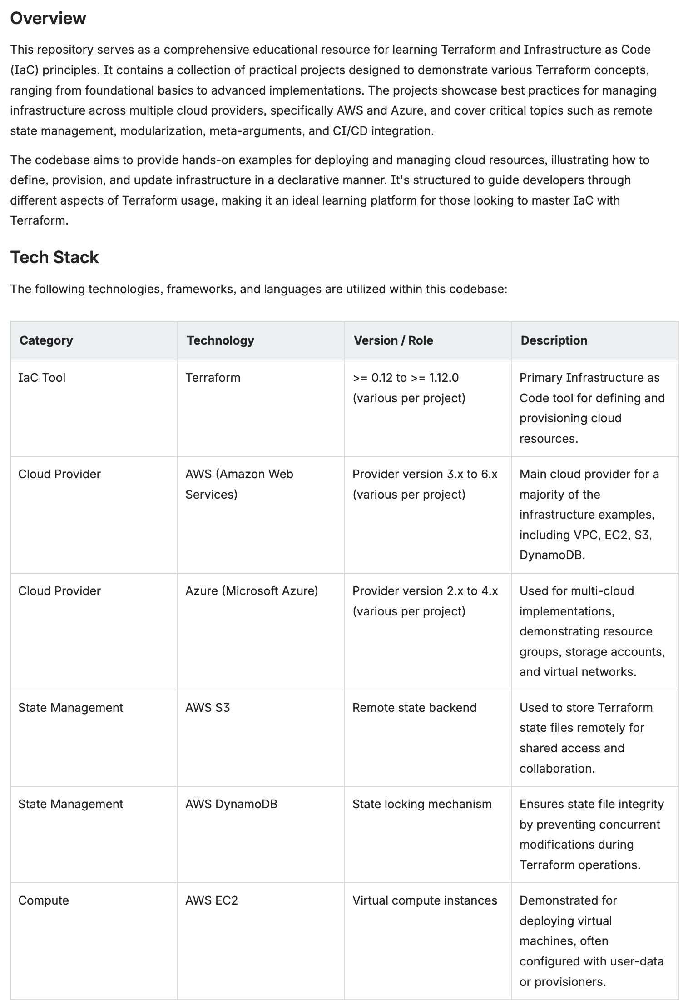
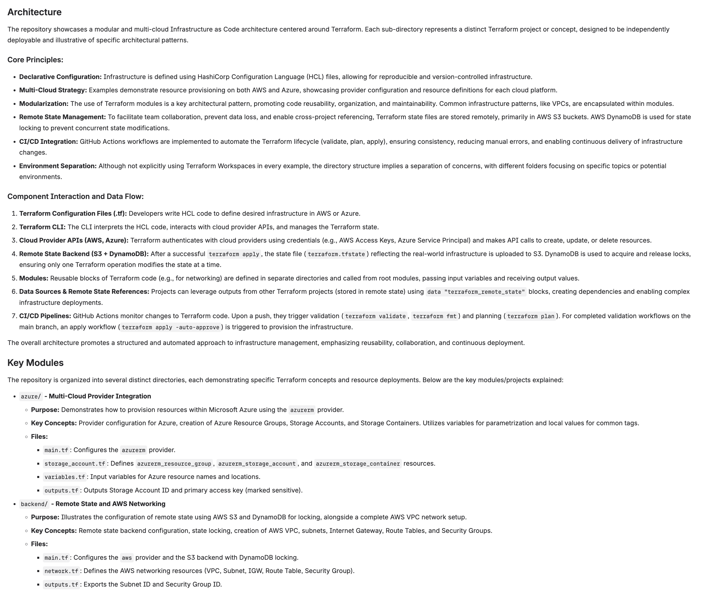
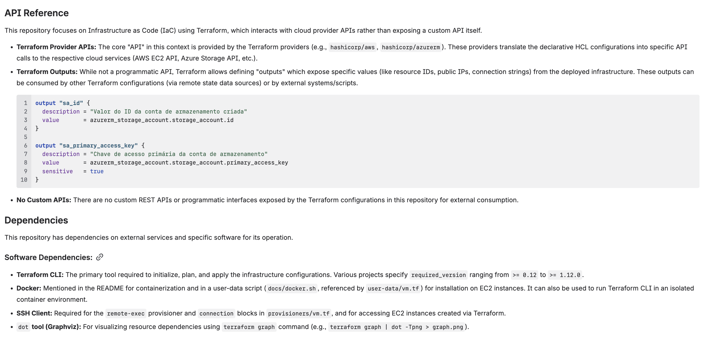
Other styles give other structures: Developer Documentation has 9 sections including architecture, API reference and troubleshooting; Management Overview is a non-technical summary with risks and strategic recommendations.
Installation
- Find CodeDoc on the Atlassian Marketplace, click Try it free (30-day trial) and choose your Confluence Cloud site.
- In Confluence, open Apps → CodeDoc. On first launch you see the setup assistant.
Initial setup
The setup assistant has three steps: Connect Git (required), AI pages (optional) and Ready. A CodeDoc admin runs it; Confluence administrators are always admins.
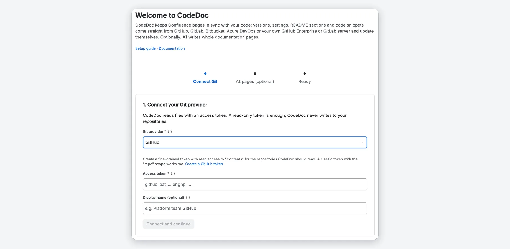
Connect Git
CodeDoc only reads files, so a token with read permission is enough. Which token each provider needs: Supported providers.
- Select the Git provider: GitHub, GitLab, Bitbucket Cloud, Azure DevOps, or your own GitHub Enterprise or GitLab self-managed server (details). A note names the token to create, with a direct link.
- Paste the access token. For Azure DevOps, also enter the organization URL (
https://dev.azure.com/your-org). - Optionally set a display name, for example "Work GitHub", and click Connect and continue. If the token does not work, the message says why.
AI pages (optional)
With the Advanced edition, Atlassian AI is included: click Continue with Atlassian AI. Otherwise click Skip, use sync blocks only, or Connect an AI provider to use your own key. You can change this any time in Settings → Connections.
Connect your own AI provider
- Select Anthropic, OpenAI or Google Gemini and paste your API key: Anthropic, OpenAI, Google AI Studio.
- Click Connect. CodeDoc checks the key and loads the complete list of models from your provider.
- CodeDoc preselects a balanced, fast model. Pick another one in the searchable Model list if you like; recommendations are at the top.
Fast models (Claude Haiku, GPT mini models, Gemini Flash) write a page for a medium repository for a few cents. Set a spending limit in your provider account.
Repositories
The Repositories tab lists the repositories CodeDoc may read. Sync blocks and AI pages can use only these. Only CodeDoc admins add or remove them.
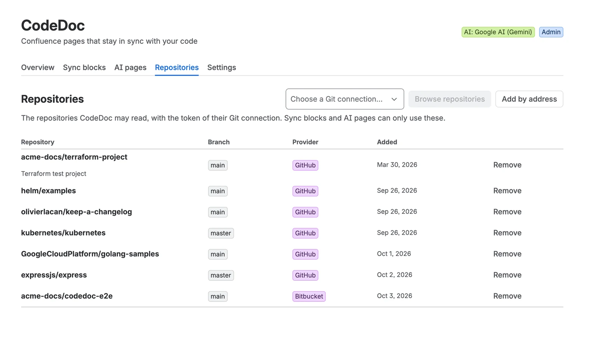
- Browse repositories: with several Git connections, choose the connection first. Search, tick the repositories and click Add N Selected Repository(ies). The list shows up to 100 repositories.
- Add by address: paste the address, for example
https://github.com/org/repo; a link to any file or branch in it works too. Leave Branch empty to use the repository's default branch, then click Add Repository. CodeDoc checks access first.
GitLab subgroups, Bitbucket and your own server
Add by address works for all token types and is the only option for Bitbucket access tokens, which cannot list repositories. GitLab projects in subgroups (group/subgroup/project) are supported. For your own GitHub Enterprise or GitLab server, connect the server in Settings → Connections first, then add its repositories here. If adding fails, the message names the repository and the connection CodeDoc tried.
Sync blocks
A sync block shows a value, a table, a section or code from a file in your repository on a Confluence page and keeps it up to date. CodeDoc copies exactly what is in the file: no AI calls, no AI key, no token costs.

The synced text is stored in the page like anything you type, so Confluence search, PDF and Word export and the page history include it. CodeDoc writes to the page only when the content in Git changed. If a file can't be read, the block keeps its last good content and says what went wrong.
Add a sync block
- Edit a page, type
/and choose CodeDoc Sync Block. - Paste the link to the file (copy it from the address bar while the file is open in your Git provider) and click Use link. CodeDoc fills in repository, branch and path; the repository must be in the Repositories tab. Or choose the repository and pick the file under Find a file or Common files.
- Choose what to show (table below). Instead of typing a key path, heading or snippet name, click Show the keys of the file (or headings, or snippets) and pick from the list.
- Choose how often CodeDoc updates the block.
- Click Show preview, then Save: the content appears in the editor right away. Publish the page; from now on CodeDoc keeps the block current.

Every field has a (?) with a short explanation. To change a block later, edit the page, select the block and click the pencil icon (Edit).
What a sync block can show
| What to show | You enter | Example and result |
|---|---|---|
| Value(s) from YAML or JSON | One key path per line, optionally Label = path | image.tag or App version = appVersion. One value as text, several as a table. |
| Regular expression | A regular expression; the first group in parentheses is shown | ^FROM\s+(\S+) shows the base images of a Dockerfile. |
| Markdown section | The heading, without # | Installation shows everything below that heading up to the next heading of the same level. |
| Latest CHANGELOG entry | — | The newest release entry with its heading; an "Unreleased" entry is skipped. |
| Code snippet between markers | The snippet name | Mark the code with two marker comments, e.g. # codedoc:start install and # codedoc:end install. The block follows the code when lines are added above it. |
| Line range | 10-25 or 42 | A code excerpt. If lines are added above the range, the block shows different lines; prefer a snippet. |
| Whole file | — | Markdown files formatted, other files as a code block. |
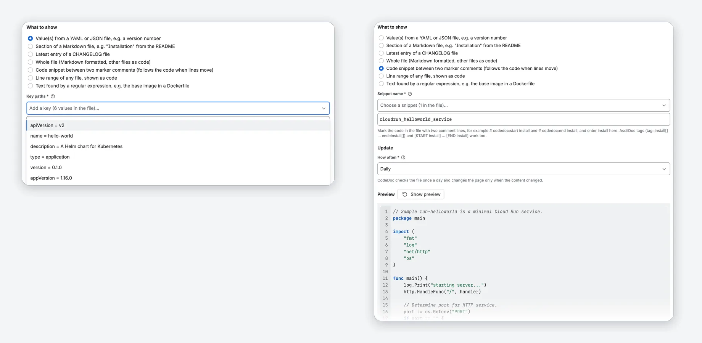
Key path syntax, snippet markers and headings
Key paths: keys separated by dots (image.tag), list items by index (containers[0].image), all entries with * (services.*.image.tag) and keys that contain dots in quotes (labels["app.kubernetes.io/version"]). Files with several YAML documents, such as Kubernetes manifests, are searched document by document. If a key path doesn't exist, the message lists the keys that do.
Snippet markers: besides codedoc:start / codedoc:end, AsciiDoc tags (tag::install[] … end::install[]) and [START install] … [END install] work too. Snippets are shown as code with syntax highlighting; Markdown files formatted.
Headings one level smaller: for Markdown content you can tick Make headings one level smaller, so a # heading from the file becomes a level-2 heading and fits under the page's own headings.
Compare with the latest release
For a version in a file, such as an image tag or a package version, tick Compare with the latest release (kinds "Value(s)" and "Regular expression"). The block then shows the newest published release next to it and a colored status; a table gets the columns Latest release and Status.
| Status | Meaning |
|---|---|
| Up to date (green) | The file uses the newest release. |
| Newer than latest (blue) | The file uses a version above the release the registry calls latest, for example a pre-release. |
| Update available (yellow) | A newer minor or patch release exists. |
| Major update (yellow) | A newer major version exists. |
| End of life (red) | The version line gets no updates any more (from endoflife.date, for products such as nginx, PostgreSQL, Redis, Node.js, Python, Ubuntu and Alpine). While a line is supported, the block names the end date. |
| Not checked (grey) | CodeDoc could not tell what the value names, the value is not a version, or the registry did not answer. The reason is written next to it. |

Where CodeDoc looks, and what is sent
Where to look: Automatically recognises image references (nginx:1.25.3, or a Helm image.tag next to image.repository), dependencies in package.json and name==version lines of requirements.txt. For any other value, choose the source and enter the name: a Docker Hub image, an npm or PyPI package, the releases of a GitHub project (owner/repository), or a product on endoflife.date.
Images are compared with tags of the same form: 1.25.3-alpine with the newest x.y.z-alpine, 20-alpine with the newest NN-alpine. Pre-releases are left out. Images outside Docker Hub (ghcr.io, quay.io, private registries) are not checked yet.
Privacy: only the public name of the image or package (for example nginx or react) goes to the public registry, never the file or the repository, and only for blocks where the check is switched on. For GitHub releases the request also carries your connected github.com token, which only raises GitHub's rate limit. Don't switch it on for internal package names. Answers are kept for 12 hours and the block shows no "checked on" date, so the page changes only when the answer changes. Blocks set to "On every push" with the check also run once a day, because new releases appear without a push.
Update rules
| How often | What happens |
|---|---|
| Daily or Weekly | CodeDoc checks the file once a day or once a week and changes the page only when the content changed. |
| On every push to the branch | The block updates right after a push. Needs the CodeDoc webhook in the repository (Webhook setup); one webhook URL serves AI pages and sync blocks. |
| Only manually | The block changes only when someone clicks Update now. |
Whatever the rule, a Job Operator can click Update now on the block or in the Sync blocks tab. If nothing changed, the block says so and the page is not touched.
Who can set up sync blocks
Only users with the Job Operator or Administrator role (Roles) can choose where a block's content comes from. A page editor without a CodeDoc role cannot pull files from your repositories onto a page.
How approval works
- Settings saved in the block dialog count as approved: after you publish the page, the block starts syncing on the first view.
- Settings that reach a page another way (copied with a page or template, written through the API, changed later) show Waiting for approval until a Job Operator who can edit the page checks the repository, file, branch, content, update rule and version check, and clicks Approve and sync.
- A block reads only files of its own connected repository: paths and branches with
../parts (also written as%2e%2e), backslashes or control characters are refused (Settings incomplete, with an explanation). - Access tokens stay in CodeDoc. The block settings stored on the page contain only the repository, path and options.
Status and messages
Below every block a status line names the app (CodeDoc Sync Block), the state and the last check. Job Operators also see Update now and Manage, which opens CodeDoc. Hover over the status line for details such as the source file.
| Status | Meaning | What to do |
|---|---|---|
| In sync | The block is up to date. | Nothing. |
| Update failed | The last update failed, for example because the file was renamed or the token expired. The last good content stays. | Follow the "What to do" hint, then click Update now. |
| Settings incomplete | Required settings are missing; the message lists them. | Edit the page, select the block, click the pencil icon. |
| Waiting for approval | New or changed settings are not approved yet. | A Job Operator who can edit the page opens it once. |
| Detached | The block was removed, or its page was deleted or moved to the trash. CodeDoc never writes to a page in the trash. | Remove detached in the Sync blocks tab. |
| Not synced (license) | Without an active license, 3 sync blocks are kept up to date; this block would be one more. | Remove a block you no longer need, or get CodeDoc in the Atlassian Marketplace. |
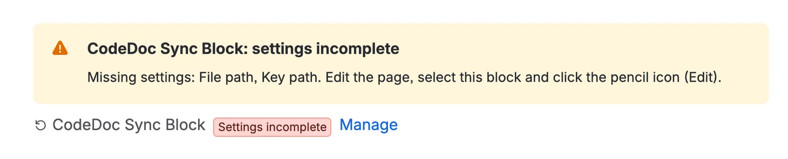
Manage all sync blocks
The Sync blocks tab lists every block with its page, source, kind of content, update rule, status, last check and, for a problem, what to do. Filter by Needs attention, run a block with Update now, or stop syncing it with Remove (its content stays on the page as normal text). Remove detached clears entries whose page or block is gone.
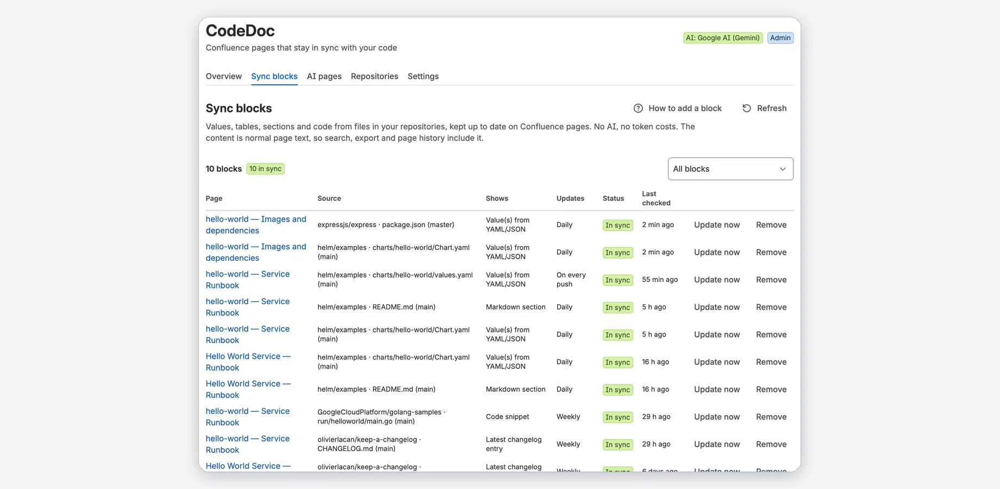
Good to know
Limits and behaviour of sync blocks
- Files up to 1 MB. Snippets, line ranges and whole files are shown up to 20,000 characters; a Markdown section has no such cut, only the 1 MB file limit. Up to 20 key paths or 50 table rows per block; regular expressions up to 200 characters.
- Edits inside a block are replaced on the next update. Write your own text above or below the block.
- Every real update creates a page version, and Confluence notifies the page's watchers as for any other edit.
- Relative links in Markdown point to the file in your Git provider; images are shown as links, because Confluence cannot load images from private repositories. The source line under each block links to the file.
- Without an active license, 3 sync blocks are kept up to date; blocks approved before keep running (Editions).
AI pages (optional)
An AI page (called a job in earlier versions) defines what to document, how to write it and where to publish it. It needs Atlassian AI (Advanced edition) or a connected AI provider (Settings → Connections).
The AI pages tab has three sub-tabs: Pages (Run, Edit, Copy, Delete), Runs and Writing styles. New AI page opens an editor with four steps:
- Source: the page name, up to two repositories with branch and folder, and the files the AI reads (File selection).
- Content: writing style, language and maximum page length; optionally start from a saved style.
- Target page: space, parent page and whether each run is reviewed first (Review and undo).
- Updates: manually, on every push or on a schedule, with a summary of what CodeDoc will do.

Editing and copying an AI page
Next names what is still missing in a step. Edit changes an existing AI page: Go to step jumps to the part you want to change, and Save changes works from any step (the page itself changes with the next run). Copy creates a new AI page with the same settings, including the target space.
Writing styles
The writing style sets the structure, tone and depth of the page for its audience.
| Style | For | What you get |
|---|---|---|
| Developer Documentation | Developers | Code examples, architecture, API reference, configuration and troubleshooting. 9 sections. |
| Comprehensive Technical | Developers | Every module, data model, security, build pipeline, testing strategy and known limitations. 12 sections. |
| Management Overview | Stakeholders | Capabilities, risks, scalability and recommendations, without jargon or code. |
| Customer Documentation | External customers | Features, getting started and integration, without internal details. |
| Compliance & Audit | Security, compliance | Security controls, data classification, access management, GDPR/ISO 27001/SOC2 mappings, risk register. |
| Onboarding Guide | New team members | Setup, key concepts, daily workflows and common mistakes. |
| Quick Reference | Developers | Tech stack, key commands, project structure and important config values. 5 sections. |
| Custom | Any | Your own instructions (up to 2,000 characters). |
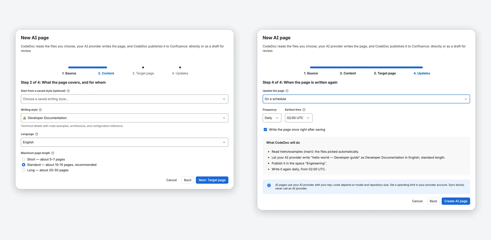
When an AI page runs
Step 4 sets when an AI page runs. All three options work in every edition and without an active license.
| Update rule | How it works |
|---|---|
| Manually | Click Run on the AI page. |
| On every push | Runs when code is pushed to the configured branch. Needs the webhook (below). |
| On a schedule | Runs daily, weekly or monthly. All times are in UTC. |
Webhook setup
One Webhook URL serves all AI pages and sync blocks set to "On every push". Copy it from Settings → Webhook and add it as a webhook in each repository. CodeDoc matches each event to AI pages and blocks by repository address and branch, so the same URL works everywhere.
Push events are enough everywhere, because a merge into the branch is a push too. CodeDoc also accepts the merge events below; other events (for example GitHub issues or Bitbucket repo:fork) are ignored.
| Provider | Events CodeDoc uses | Branch that is updated |
|---|---|---|
| GitHub | Push events only (push). Pull request events are ignored; a merged pull request arrives as a push. | The branch that was pushed |
| GitLab | Push events (Push Hook) and merge request events (Merge Request Hook; any merge request event counts, also opening or updating one) | Push: the pushed branch. Merge request: its target branch |
| Bitbucket | Push (repo:push) and pull request merged (pullrequest:fulfilled) | Push: the pushed branch. Merged pull request: its destination branch |
| Azure DevOps | Code pushed (git.push) and pull request merged (git.pullrequest.merged) | Push: the pushed branch. Merged pull request: its target branch |
GitHub: add the webhook
- Repository → Settings → Webhooks → Add webhook.
- Paste the Webhook URL into "Payload URL" and set Content type to
application/json. If you created a webhook secret in CodeDoc, paste it into Secret. - Choose Just the push event, then click Add webhook.
GitLab: add the webhook
- Project → Settings → Webhooks.
- Paste the Webhook URL. If you created a webhook secret, paste it into Secret token.
- Under "Trigger", check Push events, then click Add webhook.
Bitbucket: add the webhook
- Repository → Repository settings → Webhooks → Add webhook.
- Enter a title (e.g. "CodeDoc") and paste the Webhook URL. If you created a webhook secret, paste it into Secret.
- Under "Triggers", choose Repository → Push (
repo:push) and click Save.
Azure DevOps: add the service hook
- Project settings → Service hooks → Create subscription → Web Hooks.
- Select the trigger event Code pushed.
- Paste the Webhook URL. If you created a webhook secret, choose Basic authentication: any user name, the secret as the password. Click Finish.
On your own GitHub Enterprise or GitLab server the steps are the same; the server must be able to reach the webhook address on the internet.
Scheduled updates
A schedule writes the page again on a recurring basis, with no webhook. In step 4 choose Daily (earliest hour, 0–23 UTC), Weekly (day of week and hour) or Monthly (day 1–28 and hour). Tick Write the page once right after saving to get the first version at once.
File selection
In step 1, CodeDoc reads the file list of the chosen repositories and folders and shows three numbers: the code files found, how many are read on each run, and the estimated input for the AI in tokens, compared with the limit in Settings → AI limits. With Atlassian AI, it also shows the most credits a run can take.
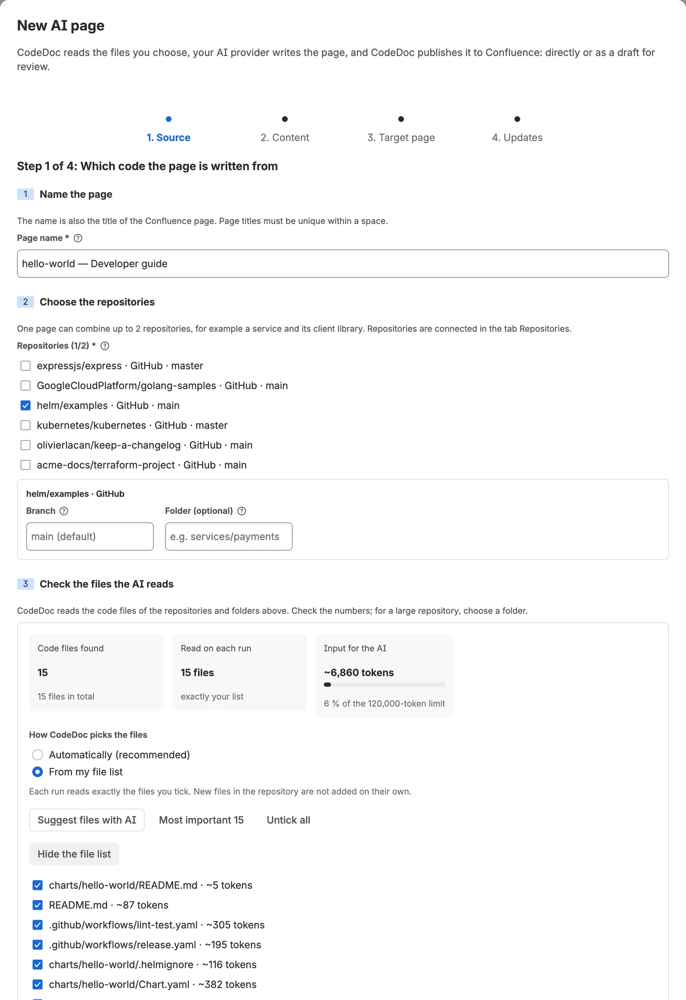
- Automatically (recommended): up to 30 code files are all read. With more, your AI provider picks the most relevant files (up to the file limit) on each run, so new files are included; that costs one small extra AI call per run.
- From my file list: each run reads exactly the files you tick. CodeDoc starts with the most important files (entry points, configuration, READMEs); Suggest files with AI lets your AI provider propose a list. New files are not added on their own.
To document one module of a large repository, enter its Folder in step 1.
"Too large for one page"
A page is written from at most 50 files (adjustable in Settings) within about 120k tokens. If the scope has more than 1,500 code files, or the repository more than 10,000 files, step 1 says "Too large for one page" with the numbers and next steps, and a run started anyway stops right after reading the file list, before any AI call, so no tokens are used. Narrow the scope with the Folder field (one module or service per AI page), choose From my file list (then only the ticked files are read, whatever the repository size), or keep single facts current with a sync block.
The file list is read once per editor session: going back to the step or to an earlier folder does not ask Git again. Show the files / Choose files opens the list with a filter field; long lists show the first 60 files and Show all. If you change the folder, files outside it drop out of your list.
File filters (advanced)
Expand File filters (advanced) at the bottom of the file panel to fine-tune the list with glob patterns, one per line:
- Leave out: matching files are removed, for example
**/*.test.ts,**/__tests__/**,**/migrations/**. - Keep anyway: rescues files a "Leave out" pattern would remove, for example
**/api.test.ts. It is not a whitelist: a file that matches neither field is always kept. To read only one directory, use the Folder field.
**/ needs at least one folder in front of the name, so add *.test.ts as well to leave out test files in the repository root. With both fields empty, the defaults apply: build output, lock files, minified and binary files are filtered, and files that usually hold credentials (such as .env files and private keys) are never read.
Maximum page length
In step 2 choose Short (about 5–7 pages), Standard (about 10–15 pages, recommended) or Long (about 20–30 pages). It is an upper limit, not a target: the AI stops when the page is complete. If pages end abruptly, choose a longer option. Options a model cannot write are not offered (for example Long with gpt-4o-mini). Admins can switch on the exact number of output tokens instead: Settings → AI limits → Advanced: exact page length in tokens.
Confluence target
Each AI page publishes to one Confluence space, optionally below a parent page ("Root (no parent)" creates a top-level page). Running the AI page again updates the same page in place; no duplicates.
Title conflicts
Confluence page titles are unique per space. When you save an AI page, CodeDoc checks the space; on a conflict, step 3 warns you and you can rename the AI page or click Save anyway. The AI page then shows a ⚠ Title conflict badge, and Run asks for confirmation first.
Review and undo
Tick Review each run before it is published in step 3. Each run then writes a draft page [DRAFT] <page name> in the same place, the AI page shows In review, and the published page does not change until someone publishes the draft. The draft is a normal page: everyone who can see the space can see it.
- Open draft: read or edit the draft in Confluence.
- Publish: the published page gets the draft's content (the first time, the draft becomes the page). The previous version stays in the page history.
- Discard: after a confirmation, the draft goes to the space trash and the published page stays as it is.
Undo the last run
When a run updated a published page, directly or by publishing a draft, the AI page offers Undo last run. CodeDoc brings back the version from before that run as a new version; the AI version stays in the page history, and the run shows Undone.
Details of review and undo
- If someone changed the page after the run, CodeDoc does not undo, so no edits are lost, and names the version to restore from the page history instead. A run that created the page has no earlier version; delete the page in Confluence to remove it.
- A discarded draft can be restored from the space trash. If Confluence refuses to delete the draft, the message says why and what to do, and the draft stays linked so you can try again.
- If you run an AI page again while a draft is waiting, the old draft goes to the trash and a new one is written. Drafts waiting for review also appear under Needs attention on the Overview.
- A run published after review shows Published in the run history; click it to see who published the draft and when.
Saved writing styles
A saved style stores the content settings of an AI page as a named template: create it once in AI pages → Writing styles, then start new AI pages from it with Start from a saved style in step 2.
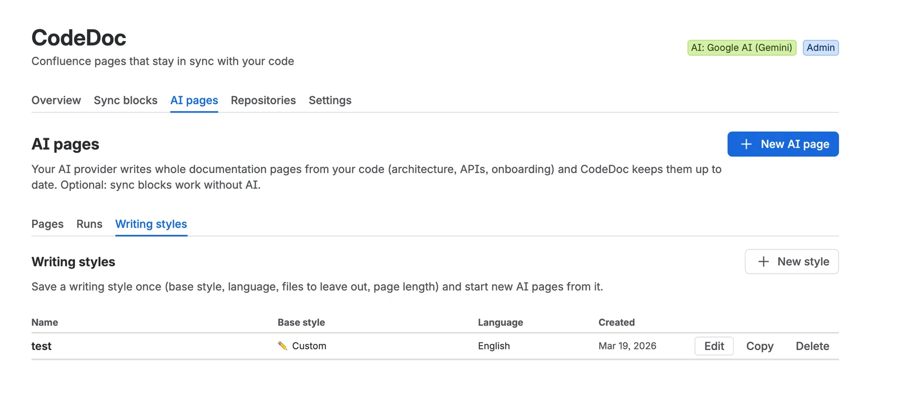
What a saved style stores, and who can change it
- The documentation type (one of the 8 styles, or Custom with your own instructions; your text is used as the complete instruction), output language, maximum page length and exclude patterns.
- Only Admins create, edit, copy or delete styles (+ New style, Edit, Copy, Delete); everyone with access can use them.
- A saved style fills in all matching fields at once; you can still adjust any of them. Custom instructions typed directly into one AI page apply to that page only.
Overview tab
The first screen of CodeDoc. Until you have a repository and a sync block, it shows the first steps. Then it shows:
- At a glance: sync blocks (and how many need attention), the last time a block changed a page, AI pages and repositories.
- Needs attention: failed sync blocks, blocks waiting for approval, AI drafts to review, failed AI pages, an AI allowance that is almost used up and Bitbucket connections to replace, each with a button to the right place.
- Recent AI runs: the last five runs with result, model and a link to the page.
Runs (AI pages)
AI pages → Runs is the log of all runs: what ran when and what happened to the page. It shows the counts of the last 30 days, Running now with progress and Cancel, and the Run history.
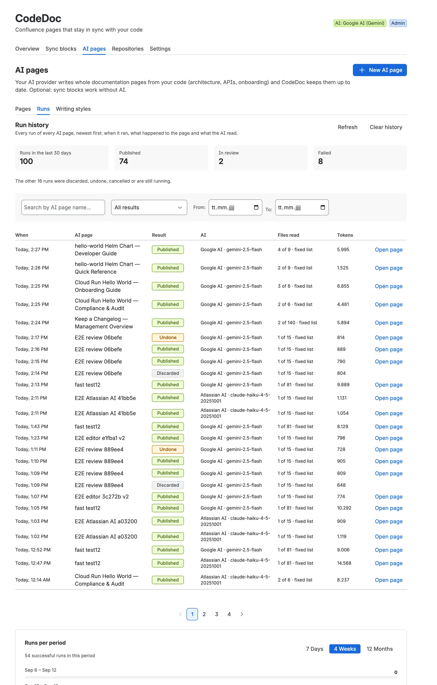
What the run history shows
- Every run, newest first: time, AI page, result (Published, In review, Discarded, Undone, Failed), AI provider and model, the files read (for example "42 of 128", with how they were chosen), tokens and a link to the page. Click Failed to see why and what to do.
- Next scheduled runs: for AI pages with a schedule, the next run with a countdown and the last run.
- Runs per period: successful runs per day, week or month.
- Clear history (admins) removes all run records; the pages in Confluence stay as they are.
Settings
Settings has five tabs: Connections, Webhook, AI limits, Permissions (admins) and Privacy & help. Only admins can change settings; Job Operators can see them.
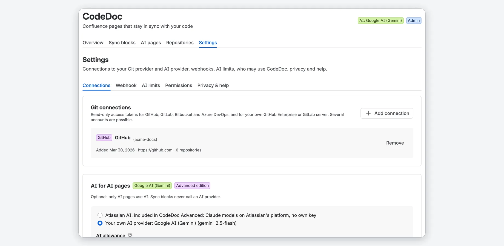
Git connections
Connect several Git providers or accounts at once, for example a work GitHub, a GitLab group and your own GitLab server. Each connection shows its provider, name, user, date added and how many repositories use it; your own servers are marked Own server.
Adding and removing connections
Add connection opens the same form as the setup. Remove deletes the stored token and the repositories of that connection; the last connection cannot be removed. Removing the last connection to an own server also withdraws its approval (Atlassian asks a site admin to confirm).
AI for AI pages
AI is optional and used only for AI pages. The card shows your edition. With Advanced, choose who writes the pages: Atlassian AI (included, no key; model Balanced or Fast, with the allowance meter) or your own AI provider (allowance).
For your own provider, Connect AI provider (or Change provider or key) checks a key and loads the models. Turn AI off (Standard) or Remove own key (Advanced) deletes the stored key: sync blocks keep working, and AI pages stay as they are; with Advanced they continue with Atlassian AI.
The model list
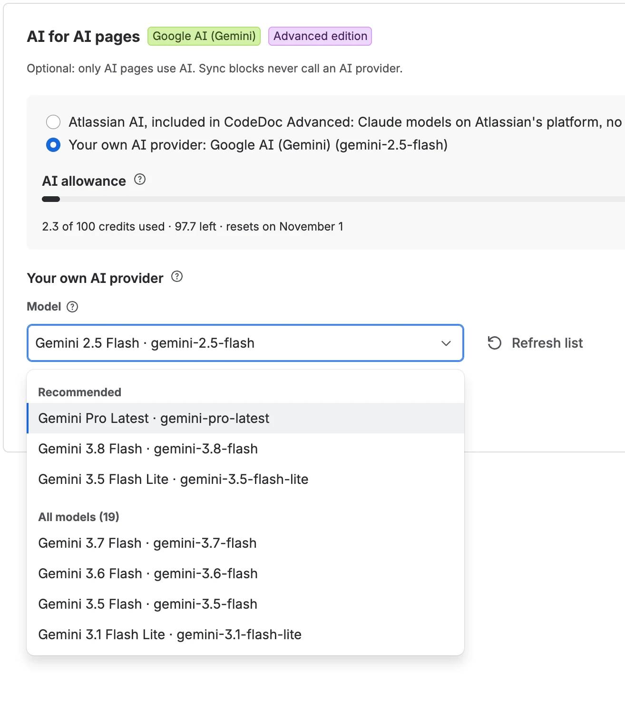
- The Model list contains every text model your provider offers, newest first, with Recommended models at the top (for example the newest Sonnet, Haiku and Opus, GPT and GPT mini, Gemini Pro and Flash). Type to search.
- Refresh list loads models released since you connected the provider. Audio, image, embedding and other non-text models are left out.
- If the selected model is no longer offered, a warning says so; choose another model, otherwise AI pages fail with "model not available".
Webhook
Shows the one Webhook URL for all AI pages and sync blocks set to "On every push", with short setup steps per Git provider (Webhook setup). Without a webhook, use a daily or weekly update.
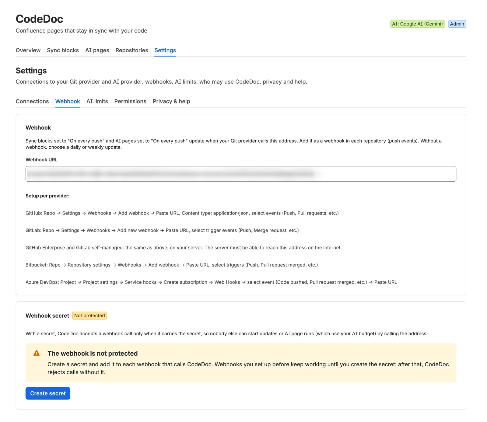
Webhook secret (admins): Create secret makes a random secret. From then on CodeDoc accepts a webhook call only when it carries the secret, so nobody else can start updates or AI page runs (which use your AI budget) by calling the address. Add the secret to every webhook that calls CodeDoc. Until a secret exists, the card shows Not protected.
More about the secret
Show secret, Replace secret and Remove secret are next to it. The same URL and the same secret work for all Git providers: GitHub and GitHub Enterprise use the webhook's Secret, GitLab the Secret token, Bitbucket the Secret, Azure DevOps Basic authentication with the secret as the password. A push that arrives while an AI page still waits in the queue starts no second run: the waiting run reads the newest commit anyway.
AI limits
- Maximum files per AI page: default 50 (range 5–200). Larger folders are narrowed to the most relevant files.
- Input token budget: total code sent to the AI per run, default 120,000 (range 30,000–500,000). Stay below your model's context window.
Repositories too large for one page (more than 1,500 code files, or more than 10,000 files in total) stop before any AI call, with next steps. Sync blocks are not affected by these limits.
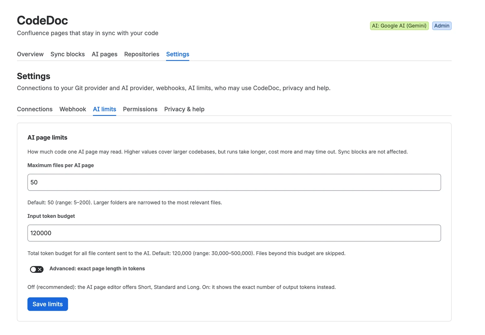
Supported providers
AI providers
| Provider | Models | Notes |
|---|---|---|
| Anthropic | Claude Opus, Sonnet, Haiku | Complete model list of your account, recommended first. |
| OpenAI | GPT and GPT mini | Only the text models of your account. |
| Google AI | Gemini Pro and Flash | Free tier for first tests (Google may use free-tier data to improve its products). |
| Atlassian AI (Advanced) | Claude Sonnet (Balanced), newest Claude Haiku (Fast) | No own key; hosted on Atlassian's platform with a monthly allowance (below). |
Git providers
CodeDoc only reads. The Quick start guide has step-by-step token instructions per provider.
| Provider | Token |
|---|---|
| GitHub (github.com) | Fine-grained token with Contents: Read, or a classic token with the repo scope. GitHub Docs |
GitHub Enterprise (your server or NAME.ghe.com) | The same tokens, created on your server. A site admin approves the address once (details). |
| GitLab (gitlab.com) | Personal, group or project access token with read_api + read_repository. GitLab Docs |
| GitLab self-managed (your server, also under a path) | The same tokens, created on your server. A site admin approves the address once. |
| Bitbucket Cloud (bitbucket.org) | Repository, project or workspace access token with Repositories: Read. No personal API tokens (why). Bitbucket Docs |
| Azure DevOps (dev.azure.com) | Personal access token with Code (Read); the organization URL is required. Microsoft Docs |
Your own Git server
CodeDoc reads GitHub Enterprise Server, GitHub Enterprise Cloud with data residency (NAME.ghe.com) and GitLab self-managed (also under a path such as https://example.com/gitlab) the same way as github.com and gitlab.com.
- Settings → Connections → Add connection: choose GitHub Enterprise or GitLab self-managed and enter the address you open the server with.
- Click Allow access to the server: Atlassian asks a site admin to confirm that CodeDoc may send requests to this address. Without this approval Forge blocks every request.
- Enter a read-only token of that server and click Connect. Right after a new approval, Atlassian needs a short while; the form tries again by itself.
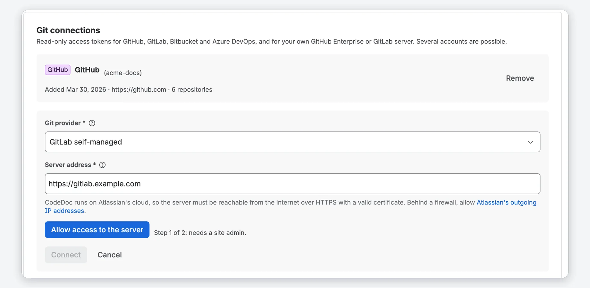
Network and approval details
CodeDoc runs on Atlassian's cloud, not inside your network. The server must be reachable from the internet over HTTPS, with a certificate from a public certificate authority. If a firewall protects it, allow Atlassian's outgoing IP addresses (IP addresses and domains for Atlassian cloud products).
The approval is listed in Atlassian Administration → Connected apps → CodeDoc → Data management ("Data storage, sharing, receiving and processing"), where an admin can remove it again. Repositories, file links, sync blocks, AI pages and webhooks then work as on the cloud services.
Bitbucket tokens
CodeDoc reads Bitbucket Cloud with an access token: a repository access token (Repository settings → Access tokens, "Repositories: Read", all plans) or, with Bitbucket Premium, a project or workspace access token for several repositories. With a repository access token, add one connection per repository.
Why personal API tokens and app passwords are not accepted
Atlassian's security requirements for Marketplace apps do not allow apps to collect or store the credentials of Atlassian accounts, and Bitbucket API tokens belong to an Atlassian account. Access tokens belong to a repository, project or workspace instead. A connection made with a personal token before CodeDoc 8 keeps working for now and is marked for replacement: add a connection with an access token, then remove the old one.
Editions, trial and licensing
CodeDoc is a paid app with two editions and a 30-day free trial. Both editions contain every CodeDoc feature; Advanced adds Atlassian-hosted AI, so AI pages need no own AI key.
| Feature | Standard | Advanced |
|---|---|---|
| Sync blocks: values, sections, changelogs, snippets, files, version check | ✓ | ✓ |
| GitHub, GitLab, Bitbucket Cloud, Azure DevOps and your own GitHub Enterprise or GitLab server | ✓ | ✓ |
| AI pages with your own Anthropic, OpenAI or Google Gemini key | ✓ | ✓ |
| Review before publishing, undo, schedules, webhooks, roles | ✓ | ✓ |
| Atlassian AI: AI pages without an own key, Claude models on Atlassian's platform | — | ✓ |
| Monthly AI allowance with usage meter (100 credits a month) | — | ✓ |
Atlassian AI and the monthly allowance
- Atlassian AI writes AI pages with Claude models hosted on Atlassian's platform (Forge LLMs), with the same content moderation as Atlassian's own AI features. In Settings → Connections choose Balanced (Claude Sonnet, the most thorough pages) or Fast (the newest Claude Haiku Atlassian offers, about a third of the credits). Choosing the files of a large repository always uses the fast model.
- Each site gets 100 credits a month; the trial of Advanced has 30 for the whole trial. A typical page takes 2–5 credits with Balanced, a small one well under one. The editor shows the most a page can take ("up to N credits per run").
- Before a run starts, CodeDoc checks that its largest possible use still fits. If it doesn't, the run does not start, and the message says when the allowance resets (the first day of the next month, UTC). Until then, AI pages can use your own AI provider.
- Settings shows the meter: credits used and left, runs and tokens this month; the Overview warns from 80 %. CodeDoc credits are separate from Rovo credits: nothing is taken from your Atlassian AI or Rovo allowance, and there is no extra charge.
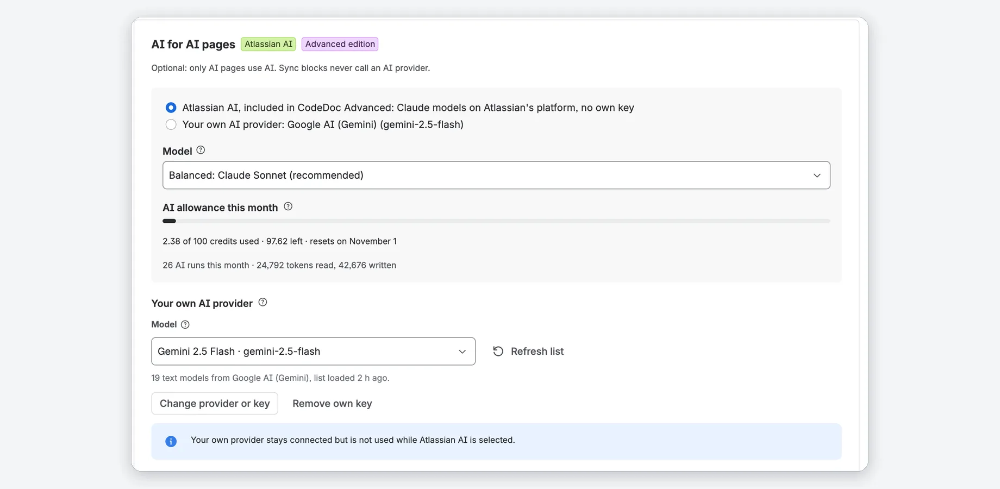
If you connected your own AI provider before moving to Advanced, AI pages keep using it until an admin chooses Atlassian AI.
Trial
During the 30-day trial, all features of the edition are available, with unlimited sync blocks, repositories, AI pages and runs. The trial of Advanced includes Atlassian AI with 30 credits for the whole trial; after the trial, Advanced includes 100 credits a month.
Without an active license (after the trial)
- 3 sync blocks are kept up to date. Blocks approved before keep running; a new block beyond the limit shows "Not synced (license)" and keeps its content.
- 1 AI page: an existing AI page continues to work, with all update rules (manual, webhook, scheduled).
- Unlimited repositories; all writing styles, AI providers and languages remain available.
Access control
Confluence administrators always have full access. Everyone else gets access through Confluence groups that you assign to one of two roles.
Roles
| Role | For | Can |
|---|---|---|
| Administrator | App admins, team leads | Everything: Overview, Sync blocks, AI pages, Repositories, Settings including Permissions. |
| Job Operator | Developers, documentation owners | Overview, Sync blocks (set up, approve, update), AI pages (create and run); Repositories and Settings read-only. |
| Confluence Administrator | Site and product admins | Always full Administrator access, no configuration needed. |
| No role | All other users | Access denied, with a link to request access from the admin. |
Configuration
- Open CodeDoc → Settings → Permissions (Administrators only).
- Under Administrator Groups and Job Operator Groups, search for a Confluence group and click + Add.
- Manage the members of these groups in Confluence Settings → Groups; nothing changes in the app when people join or leave.
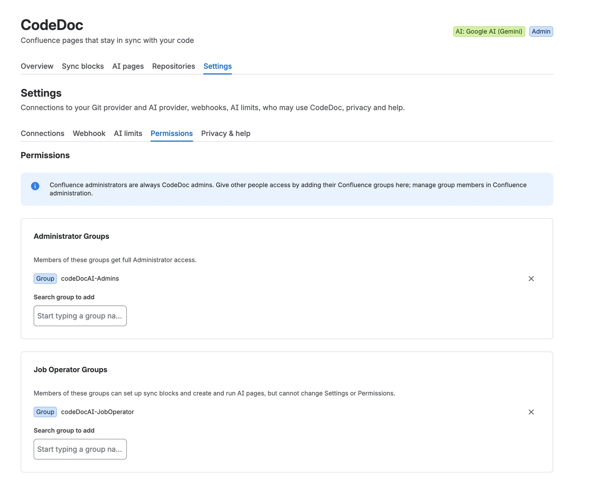
Tips and timing
Create two dedicated groups, for example codeDocAI-Admins and codeDocAI-JobOperator, to keep CodeDoc access separate and easy to audit. Your own role is shown in the top-right corner of the app.
A user added to a group gets access within about 2 minutes; a user removed from a group loses it within about 30 minutes. There is no way to force a refresh; this keeps the number of Confluence API calls low.
Data processing and privacy
All processing takes place on Atlassian's Forge infrastructure; there is no CodeDoc server.
- Sync blocks: the Forge runtime reads the chosen file from your Git provider with your access token, and CodeDoc writes the part you chose into the block. Nothing is sent to an AI provider. CodeDoc stores the block settings and a checksum of the content, not the file.
- Version check (optional): only for blocks where it is switched on, the public name of the image or package (for example
nginx) goes to its public registry: Docker Hub, npm, PyPI, GitHub (releases) or endoflife.date. The answer is kept for 12 hours in the app's storage of your site. No file content or repository is sent; for GitHub releases the request carries your connected github.com token. - AI pages (optional): the Forge runtime fetches the selected files with your access token; files that usually hold credentials (such as
.envfiles and private keys) are never fetched. With your own AI provider, it sends them to that provider with your API key, under your account and its data terms. With Atlassian AI (Advanced), it sends them to Claude models hosted on Atlassian's platform; no third-party AI account or key is involved. CodeDoc keeps file names, token counts and, for Atlassian AI, the credits of each run, not the code.
Storage, encryption, page writes and usage statistics
- All data transfers are encrypted with TLS.
- CodeDoc calls only your Git providers (including own servers a site admin approved), for AI pages your AI provider or Atlassian AI, and, for blocks with the version check, the public registries named above.
- API keys and access tokens are stored in Forge encrypted storage within your Confluence site. They are never shown again, never written to pages and never logged.
- CodeDoc creates and updates pages as the CodeDoc app: AI pages in the spaces you choose, sync blocks only inside their own block. Page restrictions that exclude the app stop these updates.
- Usage statistics: CodeDoc counts how often features are used (for example "a sync block was updated"), summed over all sites, and writes technical logs that Atlassian makes available to app vendors. No page, space, repository, file or user information is part of the counts.
Full details: Privacy Policy.
Troubleshooting
Most messages in CodeDoc name the cause and what to do. If one of these does not help, write to support@janekbehrens.de.
Sync blocks
"the file or the branch does not exist (HTTP 404)"
Check the file path and the branch in the block settings: paths are case-sensitive and start below the repository root. Copy the path from your Git provider (the part after the branch name). If the file was renamed or moved, update the path. Show preview checks the path before you save.
"Key path … was not found in the file"
The message lists the keys that exist at that point of the file, for example Keys under "image": repository, pullPolicy, tag. Key paths are case-sensitive and work only with YAML and JSON files; for other files choose a regular expression, a line range or the whole file.
"Settings incomplete" or "Waiting for approval"
Settings incomplete lists the missing settings: edit the page, select the block and click the pencil icon. Waiting for approval means new or changed settings are not approved yet: a Job Operator or Administrator who can edit the page has to open it once (details).
"the Git provider rejected the access token (HTTP 401)"
The token stored in CodeDoc is invalid or expired. An administrator can replace it under Settings → Connections. The block keeps its last good content until the next successful update.
"On every push" does not update
Push updates need the CodeDoc webhook in the repository (Webhook setup) and a push to the branch the block follows (its Branch setting, or the repository's default branch). Update now checks the block in the meantime.
AI pages
"A Confluence page with this title already exists"
Page titles are unique per space. Rename the AI page, or rename or move the other page in Confluence. CodeDoc warns about conflicts when you save an AI page (Confluence target).
"AI returned empty response"
- Input token budget too low: raise it in Settings → AI limits.
- Page length too short: choose a longer Maximum page length in step 2.
- Model limits: try a more capable model (for example Haiku → Sonnet, or a GPT mini model → the full GPT model).
XHTML parsing error
AI output is sometimes not valid Confluence markup. CodeDoc repairs broken tags and macros automatically; if that does not work, it falls back to a simplified format (plain text with headings), so the page is always created. Run the AI page again.
"Rate limit exceeded" (429)
Your AI provider is rate-limiting requests. CodeDoc retries up to 3 times with increasing delays (3 s, 8 s, 15 s). If the error persists, wait a few minutes, check the limits of your provider plan, and reduce the number of files the AI reads.
"Insufficient credits/balance" or a quota message from the provider
Your AI provider account has no credits left. Top up at Anthropic or OpenAI; for Gemini, check the quota in AI Studio.
The provider says the request is too large
The code exceeds the model's maximum input. Let CodeDoc pick the files automatically or tick fewer files, lower the input token budget, add Leave out patterns or set a Folder (File selection), or switch to a model with a larger context window.
Atlassian AI: "the included AI allowance for this month is used up"
The run did not start, so nothing was used. The allowance resets on the first day of the next month (UTC). Meanwhile, choose Your own AI provider in Settings → Connections, or wait. If only a little is left, fewer files or a shorter page may still fit.
Atlassian AI: "declined this request in its content safety check"
Atlassian checks every request like its own AI features. Leave out files with unusual content (AI page → Source → file filters), or use your own AI provider for this page.
A scheduled AI page didn't run at the expected time
Schedules are checked hourly, so a run starts up to about 1 hour after the configured time. If nothing ran after 2 hours or more, check that the update rule is On a schedule, that Next scheduled runs under AI pages → Runs is correct, and that your Git token (and AI key, if you use your own) is still valid.
The page is too short or inaccurate
Choose a longer Maximum page length, include more relevant files (the AI can only document code it receives, so add config files, the README and package.json), or try a more capable model. AI-written pages can contain errors: review them before sharing, and consider Review each run before it is published.
Webhooks, connections and servers
Webhook: "Event is not supported"
The webhook sends an event CodeDoc does not use. Send push events, or one of the merge events in the events table; others such as fork, issue or comment are ignored.
Webhook arrives, but nothing updates
No AI page or block matches. Check that the repository is added in the Repositories tab with the same address as in the webhook, that the pushed branch is the branch the AI page or block follows, and that the update rule is On every push.
Bitbucket: "personal API tokens and app passwords cannot be used"
CodeDoc accepts only Bitbucket access tokens (Bitbucket tokens). Create a repository access token with "Repositories: Read" and paste only the token value.
Bitbucket: "Browse" doesn't show my repositories
Bitbucket does not let access tokens list repositories (its account-wide repository list was removed in 2026). Add each repository with Add by address; CodeDoc checks there that the token can read it. With Bitbucket Premium, one project or workspace access token covers several repositories.
Own server: "CodeDoc may not connect to … yet" or "could not reach …"
- May not connect yet: click Allow access to the server; a site admin has to confirm Atlassian's dialog. Right after a new approval, wait a minute and click Connect again.
- Could not reach: Atlassian's cloud cannot open the address. Check HTTPS with a certificate from a public certificate authority, and that a firewall allows Atlassian's outgoing IP addresses.
- Reached, but the token was not accepted: the token is wrong, expired or lacks read permission (GitHub: Contents read; GitLab: read_api and read_repository).
FAQ
Do sync blocks use AI or cost tokens?
No. A sync block copies exactly what is in the file: no AI calls, no token costs, nothing sent to an AI provider.
Does Confluence search find the content of a sync block?
Yes. The synced content is stored in the page like normal text, so Confluence search, PDF and Word export and the page history include it.
Will sync blocks fill up the page history?
No. CodeDoc writes to the page only when the content in Git changed, so every page version stands for a real change in the file.
Does CodeDoc use our Rovo or Atlassian AI credits?
No. Atlassian AI in CodeDoc Advanced has its own monthly allowance, included in the subscription. Nothing is taken from your Rovo or Atlassian AI credits.
Can CodeDoc read our GitLab or GitHub Enterprise behind a firewall?
Only if the server is reachable from Atlassian's cloud: CodeDoc runs on Forge, not inside your network. Allow Atlassian's outgoing IP addresses or make the server reachable over HTTPS. See Your own Git server.
How much does AI usage cost?
With Atlassian AI (Advanced), AI pages are included up to the monthly allowance, with no extra charge. With your own key, CodeDoc adds no per-page fee: your AI provider bills the tokens, and the run history shows the token count of every run. A medium repository typically uses 10,000–50,000 input and 2,000–8,000 output tokens. Rough cost per page with your own key: Google Gemini's free tier costs nothing (Google may use free-tier data to improve its products); Claude Haiku or a GPT mini model usually $0.01–0.05; larger models (Claude Sonnet, the full GPT models) $0.10–0.50, depending on repository size.
Can I use different AI models for different AI pages?
Not yet: one model is used for all AI pages. Change it any time in Settings → Connections; the next run uses it.
Can I document several repositories in one AI page?
Yes, up to 2 repositories per AI page. The AI receives the code of both and writes one combined page.
What programming languages and file types are supported?
All text-based files; there is no language whitelist. How well the AI understands a file type depends on the model. CodeDoc leaves out dependencies and build output, lock files and minified files, binary and media files, and never reads files that usually hold credentials (.env files, private keys and certificates, Terraform state and variable files, credentials files), even if an include pattern names them.
What languages can the documentation be written in?
English, German, French, Spanish, Italian, Portuguese, Japanese, Chinese and Korean are in the list; Other language… accepts any language you type (quality depends on the model).
Where is my documentation stored?
As a regular Confluence page in the space you selected. Edit, move or delete it like any page. Running the AI page again updates the same page, no duplicate. With review switched on, each run is first saved as a [DRAFT] page.
Can I review documentation before it goes live?
Yes. Tick Review each run before it is published in step 3 of the AI page. The published page changes only when you publish the draft in CodeDoc. Discard keeps the published page unchanged; Undo last run brings back the version before a run. See Review and undo.
Do webhook and schedule updates write the AI page from scratch?
Yes. Each update reads the current code from Git, the AI writes the page again and CodeDoc updates the Confluence page in place.
Can I use the app with private repositories?
Yes. CodeDoc uses your access token; with read access to a repository, public or private, it works.
How do I uninstall?
Go to Confluence Settings → Apps → Manage apps, find CodeDoc and click Uninstall. From then on, the app can no longer read its configuration and stored data; Atlassian keeps it for 28 days and then deletes it (within 21 days, you can ask us to have it restored to a new installation). Generated Confluence pages remain in your spaces; delete them manually if needed.
Support
Need help? Write to support@janekbehrens.de; we aim to answer within 24 hours.
Bug reports: the Report a bug button under Settings → Privacy & help creates a pre-filled email with diagnostic information. More on the support page.